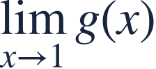
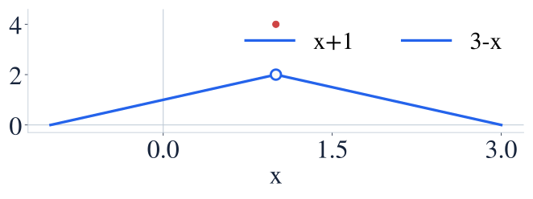
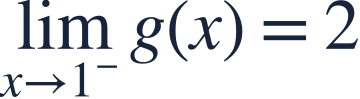
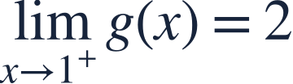
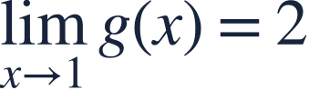
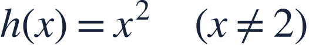
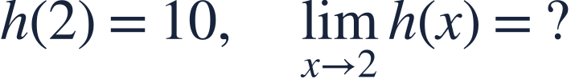

Limits from tables and graphs
표와 그래프의 극한

An open point and a filled point answer different questions.
빈 점과 채운 점은 서로 다른 질문에 답합니다.

An open point and a filled point answer different questions.
빈 점과 채운 점은 서로 다른 질문에 답합니다.
Trace nearby graph points; do not jump straight to the filled point.
주변 그래프를 따라가세요. 바로 채운 점만 읽지 마세요.

Both graph segments approach height 2. The separate filled point gives the actual value 4.
두 선분은 높이 2로 갑니다. 따로 있는 채운 점이 함숫값 4입니다.

The left segment climbs toward the open point.
왼쪽 선분은 빈 점을 향해 올라갑니다.

The right segment approaches the same height.
오른쪽 선분도 같은 높이로 접근합니다.

The common nearby value is 2, while the defined value is 4.
공통으로 가까워지는 값은 2이고, 정해진 함숫값은 4입니다.
A finite table suggests a limit; the function or graph supplies the supporting structure.
유한한 표는 극한을 추정할 뿐입니다. 함수나 그래프의 구조도 확인하세요.


Read the nearby rule rather than the special point value.
특별히 정한 함숫값 대신 주변의 규칙을 읽으세요.